Scales in One position on the violin for a major scale
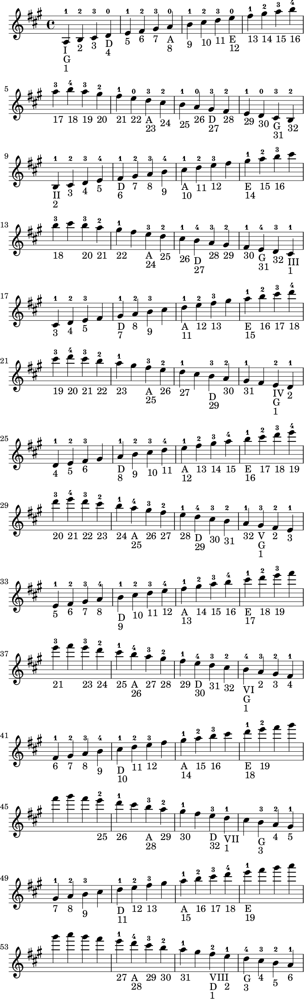
Scales in One position on the violin for a minor scale
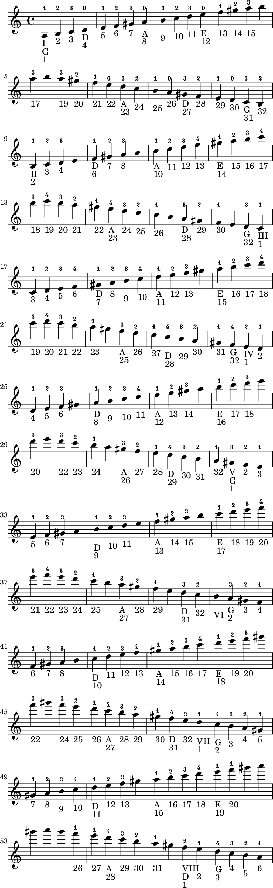
Scales in One position on the violin for b major scale
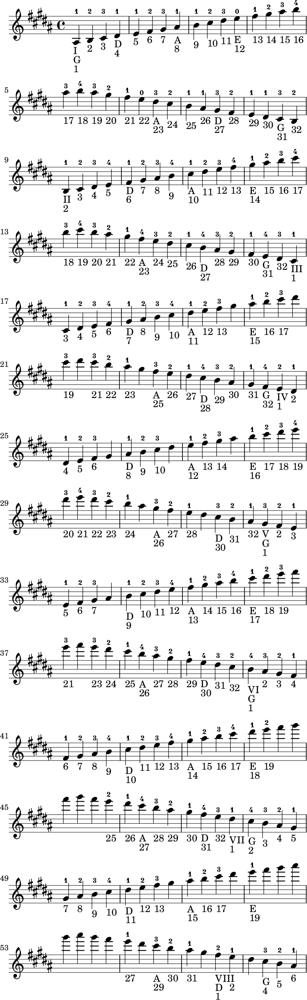
Scales in One position on the violin for b minor scale
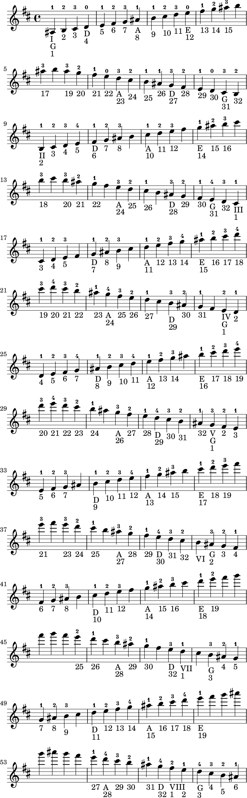
Scales in One position on the violin for c major scale
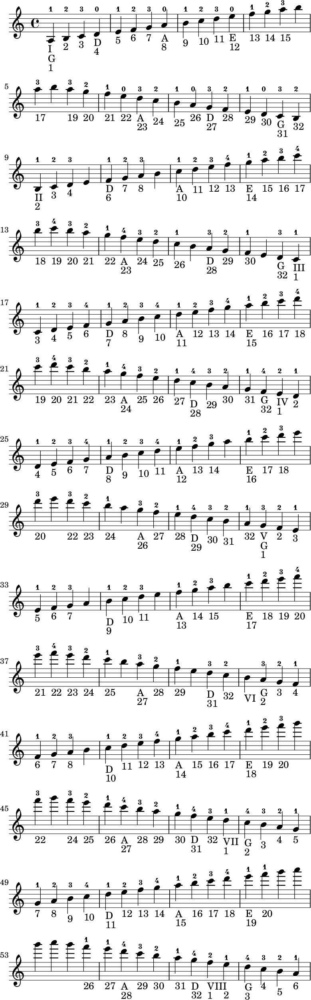
Scales in One position on the violin for c minor scale
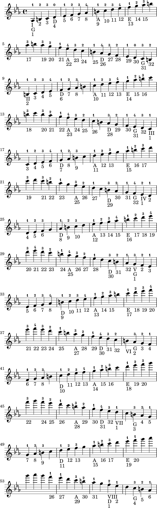
Scales in One position on the violin for e major scale
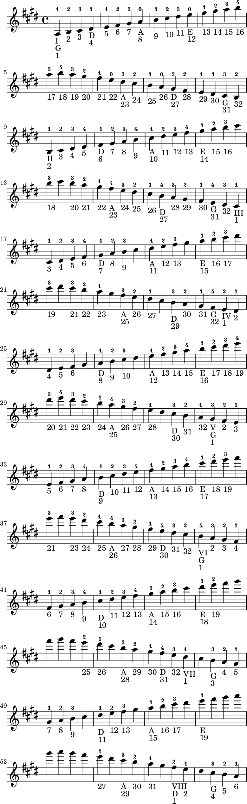
Scales in One position on the violin for e minor scale
![[image of music]](60/lily-9f7b57ba.png)
Scales in One position on the violin for f major scale
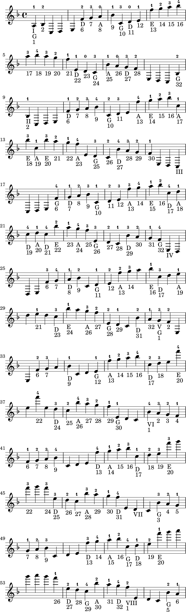
Scales in One position on the violin for f minor scale
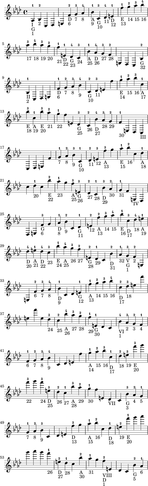
Scales in One position on the violin for g major scale
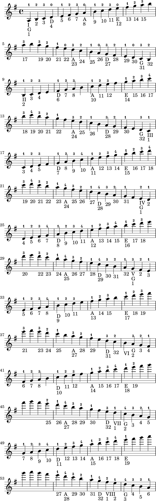
Scales in One position on the violin for g minor scale
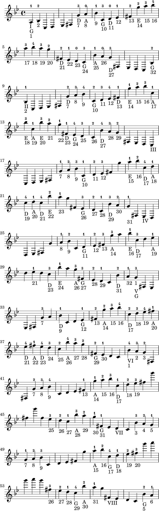